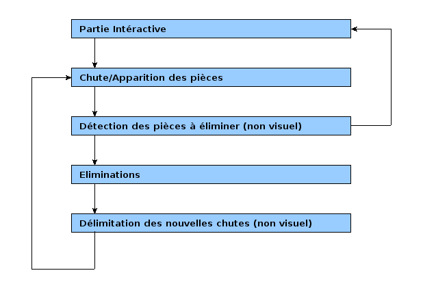

OpenAlchemist - Etat InGameState
Diagramme
Ce vieux diagramme a été fait à l'époque avec Gnumeric. Je recommande chaudement d'utiliser Dia à la place !

Partie Intéractive
- Pourvoir modifier l'angle
- Choisir sa colonne
- Demander la chute
- Regarder dans quelle colonne les pièces tombent
- Les placer dans la matrice
- Déclencher la partie chutte
Chute/Apparition des pièces
Dans la méthode afficher:
- Regarder si toutes les pièces sont tombées et à destination et si toutes les pièces à apparaitre sont apparues.
- Si oui: passe à la partie détection des éliminations
- Si non: faire tomber et faire apparaitre...
Détection des éliminations
- D'où partir ? Si un coup vient d'être joué, partir de ces 2 pièces nouvelles (sauf si la 2eme est marquée). Sinon, partir de toutes les pièces non marquées (on verra ensuite)
- Détections par exploration en profondeur ou en largeur. Pour chaque départ
- Marquer les pièces visitées (de la même couleur que le départ).
- Incrémenter un compteur de cases adjacentes de même couleurs
- Si compteur < 3, passer à la partie intéractive
- Si compteur >= 3:
- Calculer les points bonus ((compteur-3)*valeur d'une pièce)
- Déclencher l'animation "élimination" pour les pièces à éliminer
- Déterminer l'endroit où la nouvelle pièce doit apparaitre (le plus en bas puis le plus à gauche). Stocker cet endroit dans une liste
- Passer à la partie "élimination" quand tous les départs ont été testés.
Eliminations (visuelles)
Dans la méthode afficher
- Regarder si tout est éliminé (et faire des delete au fur et à mesure)
- Si oui, Ajouter les pièces à créer et leur mettre l'animation "apparition"
- Passer à la partie "Délimitation des chuttes"
Délimitation des chuttes (non affichage)
- Parcourir les cases de bas en haut: chercher les cases vides.
- Faire tomber la pièce au dessus des cases vides
- Passer au mode Chutte de pièces